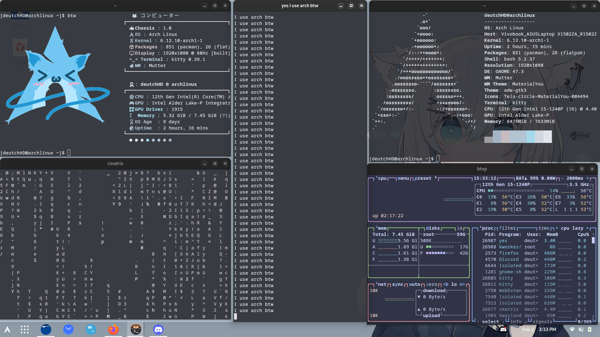

This guide is for my personal Gentoo installation, and while most instructions should work universally, I cannot guarantee that they will be applicable in all cases. Please use caution and don't replicate this setup unless you're confident in your actions. I did not upload this privately for a reason—don't risk breaking your system with these commands!
Begin the Installation
Begin by going to the Gentoo site at Gentoo.org and selecting the "Get Gentoo!" button. Then, select the "Minimal Installation CD" file.
After downloading, flash the ISO onto a USB drive using Rufus.
Once flashing is complete, reboot your system, enter UEFI, prioritize the USB drive, and boot into Gentoo.
Enter the following commands:
ping gentoo.org # To see if you have any connections to the internet.
If you do not have internet connection, please use this link in order to set up WIFI with iwctl: Gentoo Wiki IWCTL Tutorial
Partitioning
cfdisk /dev/sda # In case your system uses "nvme0n1", replace /dev/sda with /dev/nvme0n1
In the cfdisk menu, select the "GPT" option. Afterwards, make the first partition to hold the value of 1G, the 2nd partition of 4G ( or how much you want for the swap partition ) and the 3rd will have the remaining GB.
mkfs.ext4 /dev/sda3
mkfs.fat -F32 /dev/sda1
mkswap /dev/sda2
swapon /dev/sda2
Now lets make the mount point for Gentoo's root partition.
mkdir -p /mnt/gentoo
mount /dev/sda3 /mnt/gentoo
date # It should match your current time, it's fine if it's a few hours behind.
cd /mnt/gentoo
links https://www.gentoo.org/downloads/mirrors/
Use your keyboard arrows till you see the Downloads section, then press enter on it. Now again using your keyboard scroll down till you see the stage3 open rc file, select it again by pressing enter and begin downloading it. If you wish for a non-OpenRC Gentoo system, follow this guide:
WELCOME TO ARCH LINUX!
Now, you use arch (btw). Honestly might try Hyprland again too cuz why not.
As you can see, the manual installation wasn't THAT bad. It's quite more useful than some of the docs online.
To flex, do the manual way. I wanted to use archinstall but it fucking exploded itself mid-installing so I had to do it manually.
